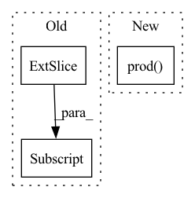

Pattern ID :36216
Before Change
t = target[b]
// Convert to position relative to box
gx, gy, gw, gh = t[:, 1] * nG, t[:, 2] * nG, t[:, 3] * nG, t[:, 4] * nG
// Get grid box indices and prevent overflows (i.e. 13.01 on 13 anchors)
gi = torch.clamp(gx.long(), min=0, max=nG - 1)After Change
box1 = gwh
box2 = anchor_wh.unsqueeze(1)
inter_area = torch.min(box1, box2).prod(2)
iou = inter_area / (box1.prod( 1) + box2.prod(2) - inter_area + 1e-16)
// Select best iou_pred and anchor
iou_best, a = iou.max(0) // best anchor [0-2] for each targetIn pattern: SUPERPATTERN
Frequency: 3
Non-data size: 3
Instances Fragment ID: 102655694
Project Name: nightsnack/yolobile
Commit Name: 0772ebf7c9f2cf253b51299215db68a44c1c3671
Time: 2019-02-19
Author: glenn.jocher@ultralytics.com
File Name: utils/utils.py
M Class Name: AnonimousClass
N Class Name: AnonimousClass
M Method Name: build_targets(5)
N Method Name: build_targets(5)
M Parent Class:
N Parent Class:
M File Name: utils/utils.py
N File Name: utils/utils.py
M Start Line: 223
M End Line: 276
N Start Line: 223
N End Line: 273
Before Change
generated_noise = generated_noise.int()
bright_regions = img.sum(1) > brightness_threshold * img.shape[1]
for ch in range(img.shape[1]):
gnch = generated_noise[:, ch]
gnch[bright_regions] = gnch[bright_regions] * -1
generated_noise[:, ch] = gnch
anom = (anom.int() + generated_noise).clamp(0, 255).byte()After Change
// invert noise if difference of malformed and original is less than threshold and inverted difference is higher
diff = ((anom.int() + generated_noise).clamp(0, 255) - anom.int())
diff = diff.reshape(anom.size(0), -1).sum(1).float().div(np.prod( anom.shape) ).abs()
diffi = ((anom.int() - generated_noise).clamp(0, 255) - anom.int())
diffi = diffi.reshape(anom.size(0), -1).sum(1).float().div(np.prod(anom.shape)).abs()
inv = [i for i, (d, di) in enumerate(zip(diff, diffi)) if d < invert_threshold and di > d] Fragment ID: 102655693
Project Name: liznerski/fcdd
Commit Name: d110aa8b141dc13f47156da913a6b4f9d64ddc74
Time: 2020-10-12
Author: p_liznersk13@cs.uni-kl.de
File Name: python/fcdd/datasets/online_superviser.py
M Class Name: OnlineSuperviser
N Class Name: OnlineSuperviser
M Method Name: __malformed_normal(8)
N Method Name: __malformed_normal(8)
M Parent Class: ImgGTTargetTransform
N Parent Class: ImgGTTargetTransform
M File Name: python/fcdd/datasets/online_superviser.py
N File Name: python/fcdd/datasets/online_superviser.py
M Start Line: 139
M End Line: 146
N Start Line: 143
N End Line: 151
Before Change
inter = (torch.min(a2, b2) - torch.max(a1, b1)).clamp(0).prod(2)
// IoU = inter / (area1 + area2 - inter)
return inter / (box_area(box1.T)[:, None] + box_area(box2.T) - inter + eps)
def bbox_ioa(box1, box2, eps=1e-7):After Change
inter = (torch.min(a2, b2) - torch.max(a1, b1)).clamp(0).prod(2)
// IoU = inter / (area1 + area2 - inter)
return inter / ((a2 - a1).prod(2) + (b2 - b1).prod( 2) - inter + eps)
def bbox_ioa(box1, box2, eps=1e-7): Fragment ID: 102655690
Project Name: ultralytics/yolov5
Commit Name: 078059c5b3ead9579c53f68c521ed5f0e7e87afa
Time: 2022-11-10
Author: glenn.jocher@ultralytics.com
File Name: utils/metrics.py
M Class Name: AnonimousClass
N Class Name: AnonimousClass
M Method Name: box_iou(3)
N Method Name: box_iou(3)
M Parent Class:
N Parent Class:
M File Name: utils/metrics.py
N File Name: utils/metrics.py
M Start Line: 285
M End Line: 289
N Start Line: 280
N End Line: 284